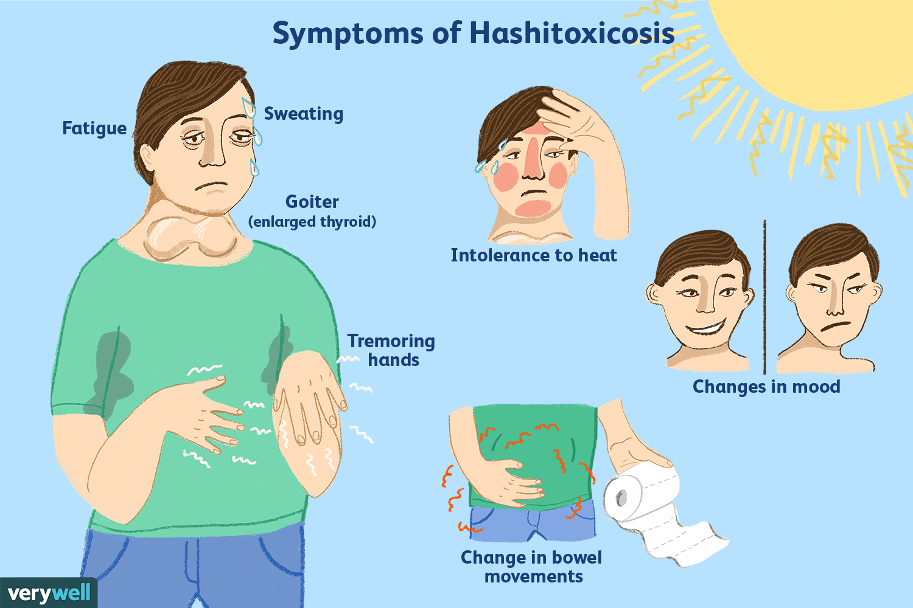

Hashimoto’s thyroiditis

SYMPTOMS:
Hashimoto's symptoms may be mild at first or take years to develop. The first sign of the disease is often an enlarged thyroid, called a goiter. The goiter may cause the front of your neck to look swollen. A large goiter may make swallowing difficult. Other symptoms of an underactive thyroid due to Hashimoto's may include:
- Weight gain
-
Fatigue
-
Paleness or puffiness of the face
-
Joint and muscle pain
-
Constipation
-
Inability to get warm
-
Difficulty getting pregnant
-
Hair loss or thinning, brittle hair
-
Irregular or heavy menstrual periods
-
Depression
-
Slowed heart rate
CAUSES
- Genes. People who get Hashimoto's often have family members who have thyroid disease or other autoimmune diseases. This suggests a genetic component to the disease
-
Hormones. Hashimoto's affects about seven times as many women as men, suggesting that sex hormones may play a role. Furthermore, some women have thyroid problems during the first year after having a baby. Although the problem usually goes away, as many as 20% of these women develop Hashimoto's years later.
-
Excessive iodine. Research suggests certain drugs and too much iodine, a trace element required by your body to make thyroid hormones, may trigger thyroid disease in susceptible people.
-
Radiation exposure. Increased cases of thyroid disease have been reported in people exposed to radiation, including the atomic bombs in Japan, the Chernobyl nuclear accident, and radiation treatment for a form of blood cancer called Hodgkin's disease.
TREATMENT
There is no cure for Hashimoto's, but replacing hormones with medication can regulate hormone levels and restore your normal metabolism.
The pills are available in several different strengths. The exact dose your doctor prescribes will depend on a number of factors, including:
- Age
-
Weight
-
Severity of hypothyroidism
-
Other health problems
-
Other medicines that may interact with synthetic thyroid hormones